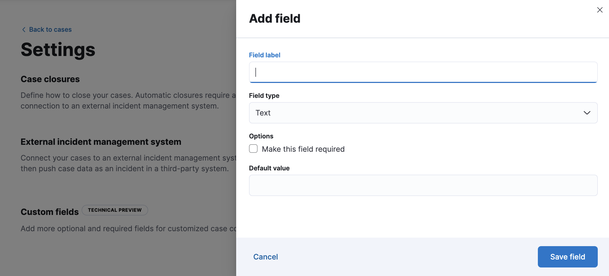
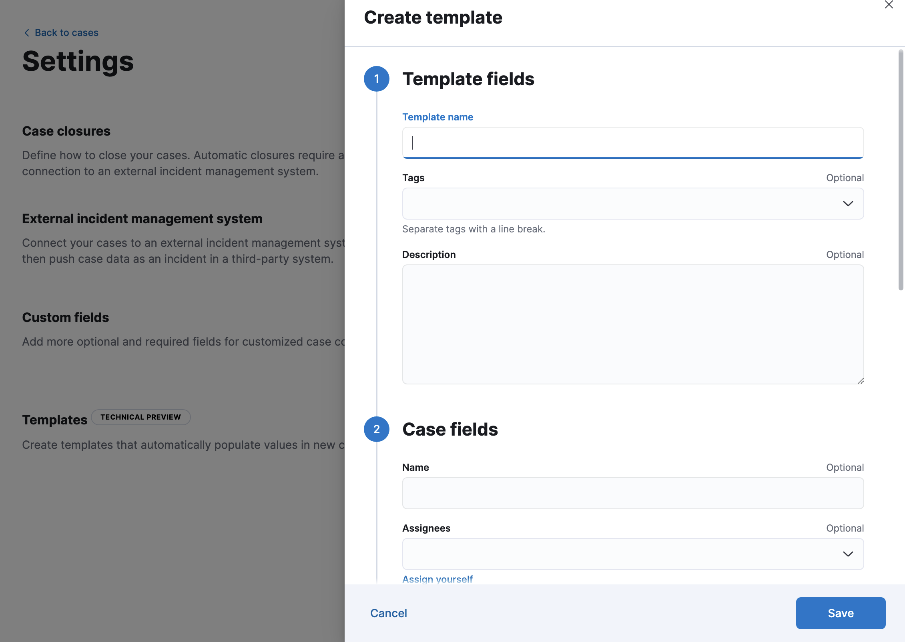

Configure case settings
editConfigure case settings
editTo change case closure options and add custom fields, templates, and connectors for external incident management systems, go to Stack Management > Cases and click Settings.
To perform these tasks, you must have full access to the appropriate case and connector features in Kibana.
Case closures
editIf you close cases in your external incident management system, they will remain open in Cases until you close them manually.
To change whether cases are automatically closed after they are sent to an external system, update the case closure options.
External incident management systems
editYou can add connectors to cases to push information to these external incident management systems:
- IBM Resilient
- Jira
- ServiceNow ITSM
- ServiceNow SecOps
- Swimlane
- Webhook - Case Management
To create connectors and send cases to external systems, you must have the appropriate Kibana feature privileges. Refer to Configure access to cases.
You can create connectors in Stack Management > Connectors, as described in Connectors. Alternatively, you can create them in Stack Management > Cases > Settings:
- From the Incident management system list, select Add new connector.
- Select an external incident management system.
- Enter your required settings. Refer to IBM Resilient, Jira, ServiceNow ITSM, ServiceNow SecOps, Swimlane, or Webhook - Case Management for connector configuration details.
You can subsequently choose the connector when you create cases and use it in case templates. To change the default connector for new cases, select the connector from the Incident management system list.
To update a connector, click Update <connector name> and edit the connector fields as required.
Custom fields
editYou can add optional and required fields for customized case collaboration. [8.15.0] Added in 8.15.0.
To create a custom field:
-
In the Custom fields section, click Add field.
 - You must provide a field label and type (text or toggle). You can optionally designate it as a required field and provide a default value.
When you create a custom field, it’s added to all new and existing cases. Existing cases have null values for new text fields until you set them in each case.
You can subsequently remove or edit custom fields on the Settings page.
Templates
editThis functionality is in technical preview and may be changed or removed in a future release. Elastic will work to fix any issues, but features in technical preview are not subject to the support SLA of official GA features.
You can make the case creation process faster and more consistent by adding templates. A template defines values for one or all of the case fields (such as severity, tags, description, and title) as well as any custom fields.
To create a template:
-
In the Templates section, click Add template.
 - You must provide a template name and case severity. You can optionally add template tags and a description, values for each case field, and a case connector.
When users create cases, they can optionally select a template and use its values or override them.
If you update or delete templates, existing cases are unaffected.